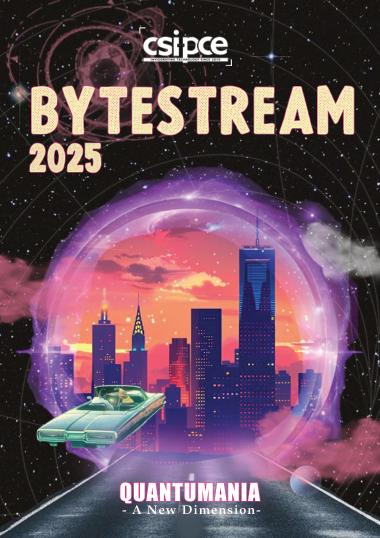
B—01Hi guys, I’m
ATHILA
Koli.
MS Data Science student at Boston University with a background in computer engineering. I build machine learning and analytics solutions, with a focus on reliable data and clear, well-designed results.
CURIOUS BY DESIGN Data&Design
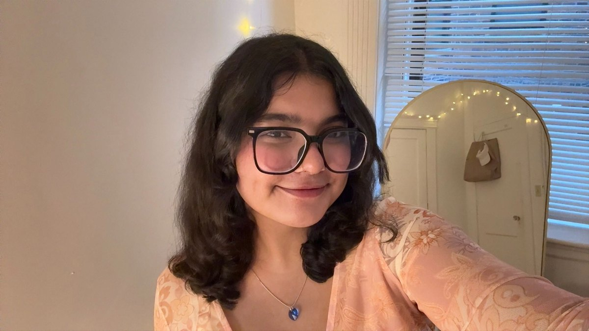
01 / ATHILA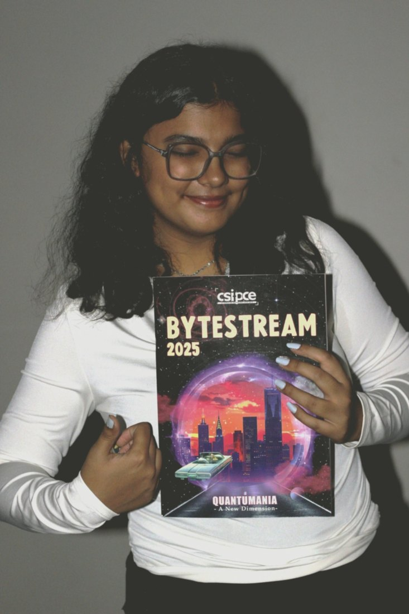
02 / KoliDATA × IMAGINATIONWelcome to my World
✳
✧
A STUDY IN LIGHT, DEPTH & POSSIBILITY
AI / DATA / VISUAL EXPERIMENTSMOVE TO EXPLORE
PythonTensorFlowscikit-learnPandasSQLOpenCVPower BITableauFigma
01 / SELECTED WORK
My Projects.
Selected projects across AI, data science, privacy, and applied machine learning.
USE THE ARROWS OR SWIPE · HOVER TO PAUSE · TAP A CARD FOR DETAILS
02 / THE CREATIVE PRACTICE
The Other Side of My Mind.
Covers and spreads from Bytestream 2025: Quantumania, the technical magazine I designed as Magazine Head at CSI-PCE.
BYTESTREAM 2025 — QUANTUMANIA / MAGAZINE DESIGNEXPLORE THE EXHIBITION ↘
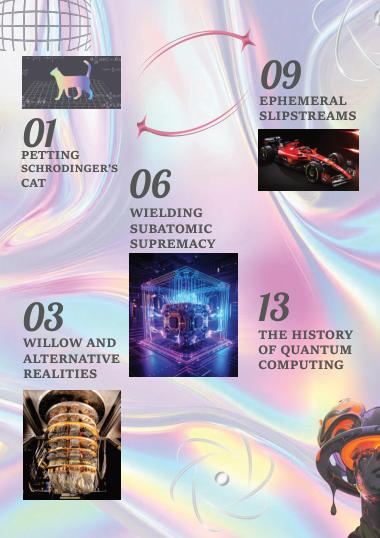
B—02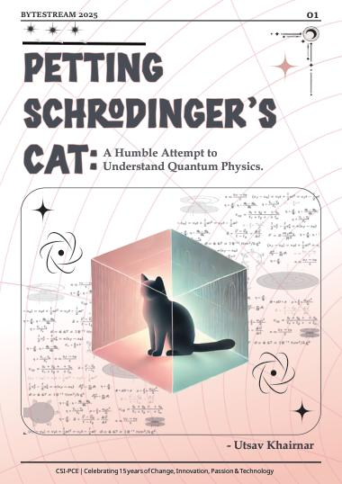
B—03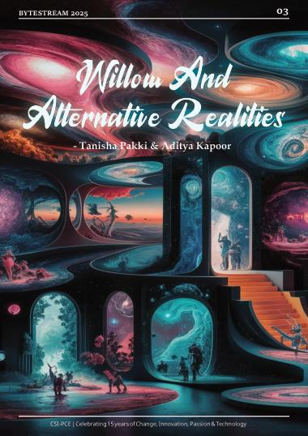
B—04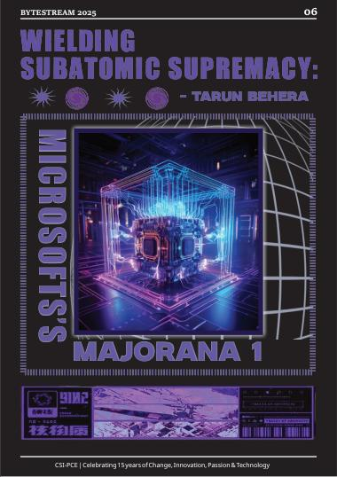
B—05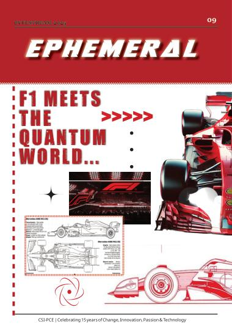
B—06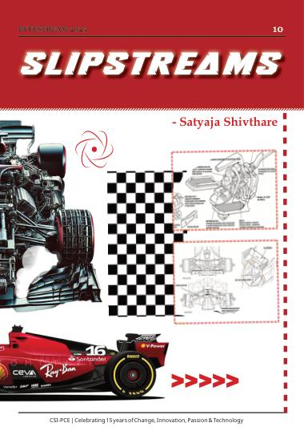
B—07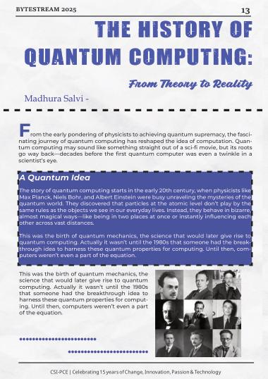
B—08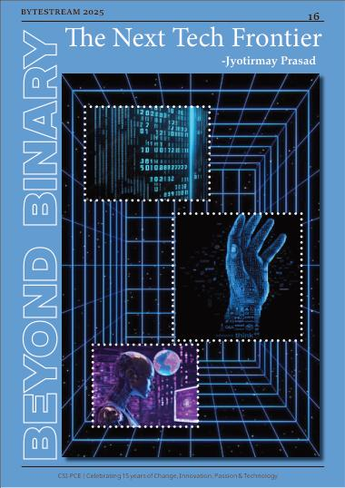
B—09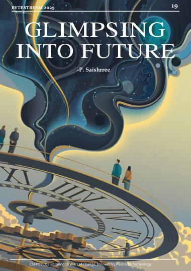
B—10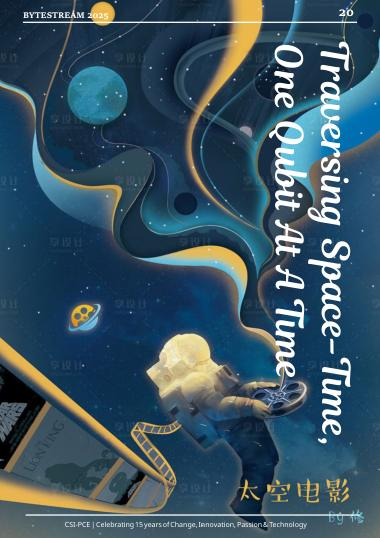
B—11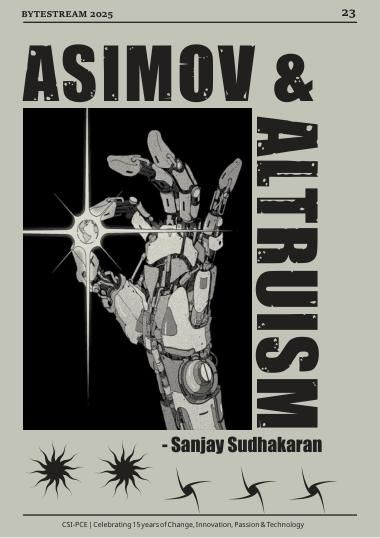
B—12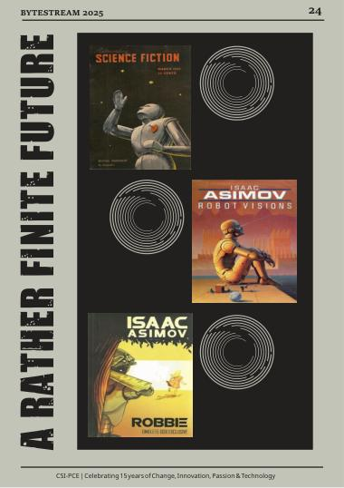
B—13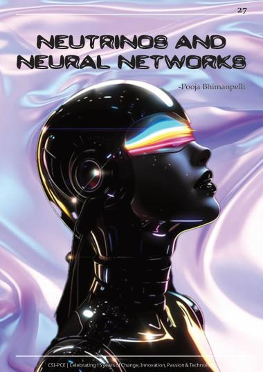
B—14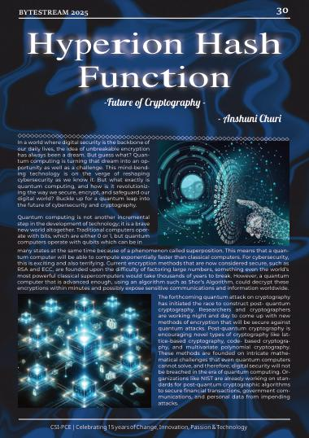
B—15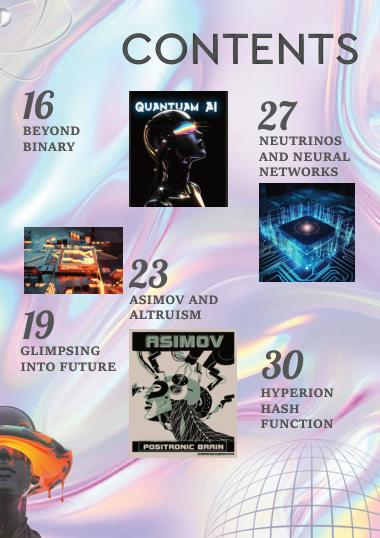
B—1603 / EXPERIENCE & EDUCATION
Experience and trajectory.
The education and practical experience informing my work.
EDUCATION
Boston University
MS in Data Science
2026—2027GRADUATE STUDY
Machine LearningDeep LearningLLM EngineeringBusiness AnalyticsBig Data
PREVIOUS STUDY
Computer Engineering
B.Tech · University of Mumbai
Open resume (PDF) ↗ LinkedIn ↗
EXPERIENCE LOG
2026—NOW
Data Research Analyst · BU Spark!
Part-time. Building evidence-based criteria to classify and document incidents of harm, supporting data collection and validation, and shaping a framework for a harm-tracking tool.
2025—2026
Data Science Intern · Bigtapp Analytics
Worked on reconciliation logic and automated validation for reporting workflows; current focus includes AI-assisted QA tooling.
2024—2025
AI Development Intern · Reliance Industries
Contributed to an obsolescence-management system UI using Angular and OpenCV.
2024
Data Analytics Intern · Tech Mahindra
Supported data analysis work and practical analytics workflows.
04 / CONTACT
Let’s start a conversation.
Open to internships, research opportunities, and thoughtful collaborations across AI, data, and design.
CONTACT / 001
Ideas become
something real.
something real.
If you’re building something in AI, data, privacy, or creative technology, I’d love to hear what you’re exploring.
TRANSMIT A MESSAGE